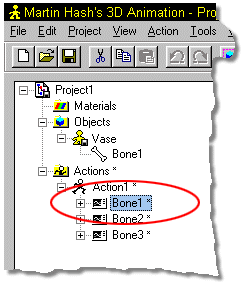

If for some reason, you wish to remove the Skeletal motion from a character,
delete the Bones Channels under the action for the bones whose actions you wish
to clear.

Tell me how to:
Creating Skeletal Motions
Save Skeletal Motions
Use Stride Length
Use Poses
Use Dopesheets